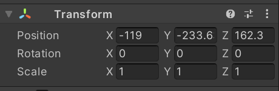
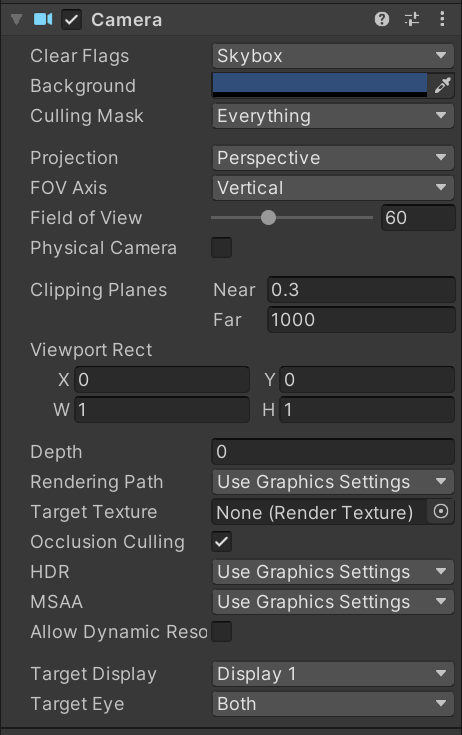
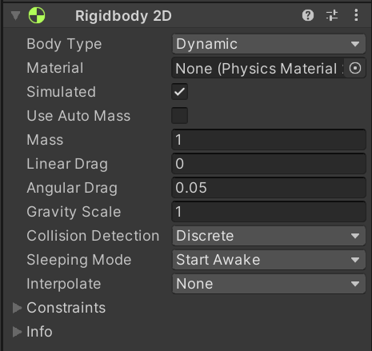
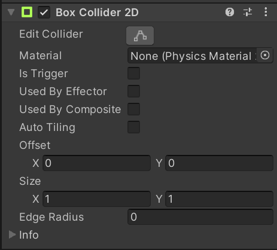
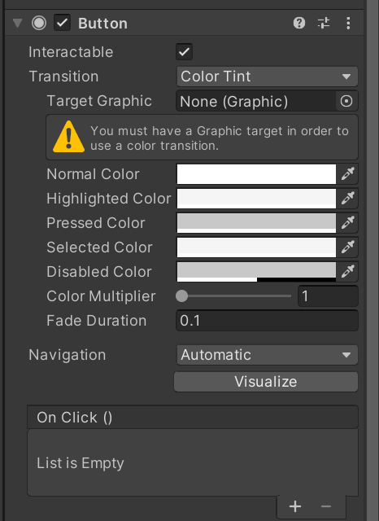
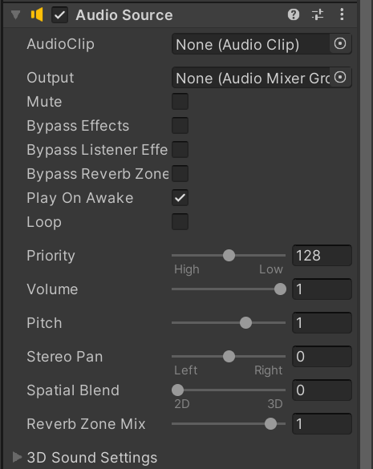

一、组件
组件是Unity引擎中某些功能的集合。当物体对象或着说，游戏对象(GameObject)挂载了某些组件，那么这个对象就拥有了特定的功能。例如，一个对象挂载了Camera组件，那么这个物体就成为了场景中的一个摄像头。当然，一个对象能挂载复数的组件，来获得更加复杂的功能。组件的存在使得Unity开发变得高效快捷，下面就介绍最基础，最常用的组件。
二、Unity常用组件
01 Transform组件

作用：
Transfrom组件是最基础的组件，每个游戏对象都会拥有这个组件。其功能是控制游戏对象的在场景中的位置、旋转、缩放。该组件无法删除。
属性：
Position栏可以控制游戏对象的位置，分别在X，Y，Z栏位中输入值，游戏对象的位置就会相应发生变化。
Potation栏控制游戏对象的旋转，分别在X，Y，Z栏输入值，游戏对象会相应发生旋转。
Scale栏控制游戏对象的缩放(大小),分别在X，Y，Z栏输入值，游戏对象会相应发生缩放。
02 Camera组件

作用：
显示当前投影范围内的物体
属性：
ClearFlags: 决定屏幕中哪些部分被清楚，常用于多台摄像机同时工作的情况，有三种模式：
Skybox: 天空盒，在屏幕显示当前摄像机的天空盒(模拟天空的图像)。
Solid Color: 在屏幕显示Background栏选择的背景色。
Depth only: 仅深度。
Don’t Clear: 不清除任何颜色，一般与自己定义的着色器使用来获得更好的渲染效果 。
Culling Mask：剔除遮罩
Projection：投影方式，分为透视和正交。
Field of view：视野范围(透视模式时设置)
Clipping Planes：剪裁平面，摄像机的渲染范围。Near为最近的点，Far为最远的点。
View Port Rect：标准视图矩形，用四个数值来控制摄像机的视图在屏幕中的位置及大小，该项使用屏幕坐标系，数值在0~1之间。
Depth：深度 ，用于控制摄像机的渲染顺序，值大的摄像机将被渲染在较小值的摄像机之上。
Rendering Path：渲染路径，设定摄像机的渲染方法。
Use Player Settings：使用Project Settings>Player中的设置
Vertex Lit：顶点光照，将所有的对象做为顶点光照对象来渲染。
Forward：快速渲染，摄像机将对所有对象按每种材质一个通道的方式来渲染。
HDR：高动态光照渲染，用于启用摄像机的高动态范围渲染功能，能让场景变得更为真实，光照的变化不会显得太突兀。
03 Rigidbody组件

作用：
用于模拟现实世界的物理规则，如重力，摩擦力等
属性：
Mass: 质量
Drag: 空气阻力，0表示没有阻力
Angular Drag：角阻力，物体在旋转时受到的扭力（阻力），0表示没有扭力。
Use Gravity：是否使用重力，使用时物体受到重力影响
04 Box Collider组件

作用：
用于检测场景中物体是否发生碰撞，常与Rigidbody组件一起使用
属性：
Is Trigger 是否设置为触发器，是则在发生碰撞时触发事件，否则物体会穿过去
Material 物体材质，更换材质可以改变物体的物理特性(摩擦力，弹力)
Offset 设置碰撞体的偏移量
Size 设置碰撞体的大小
05 Button组件

作用：
Button组件用于相应用户的点击动作
属性：
Interactable 是否交互，勾选则可使用button的功能，不勾选则禁用
Transition 过渡形式，button触发后的表现形式，有4种
None 无表现
Color Tint 以颜色改变来表示button触发
Sprite Swap 以精灵(图像)变化表示button触发
Animation 以动画表示button触发
On Click() 点击button后触发的事件
06 Audio Source组件

作用：
用于播放音频资源
属性：
AudioClip：指定播放的音频文件。
Output：可以输出到AudioListener或者AudioMixer。当设置为空时，即代表输出到 AudioListener。
Mute ：是否静音
Bypass Effects：音频滤波器开关
Bypass Listener Effects：音频滤波器监听器开关
Bypass Reverb Zones：回音混淆开关
Play On Awake：勾选则在绑定的物体加载时播放音频
Loop：循环播放音频
Priority：决定音频资源的播放优先级
Volume：音量
Pitch：音调，默认为1，此时为正常播放速度，>1为快速播放，<1为慢速播放